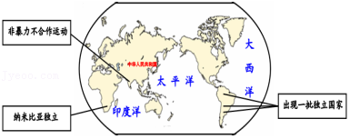

2019年北京市中考历史试题 · 选择题 第26、27、28、29、30题
26．（1.5分）如表是《1937年各大国国民收入与国防开支的比例》，可用于研究（ ）
| 美国 | 英国 | 法国 | 德国 | 意大利 | 日本 |
国民收入（亿美元） | 680 | 220 | 100 | 170 | 60 | 40 |
国防开支所占比例（%） | 1.5 | 5.7 | 9.1 | 23.5 | 14.5 | 28.2 |
A．三国同盟和三国协约的形成
B．凡尔赛﹣华盛顿体系的建立
C．第二次世界大战战争策源地的形成
D．欧美各国支持中国的全民族抗战
27．（1.5分）“在赢得第二次世界大战胜利的同盟中，主要成员之间的关系已经破裂，它们尽管没有发生军事冲突，但在意识形态和地缘政治方面，却已经处于对抗状态。¨这种“对抗状态”正式开始于（ ）
A．杜鲁门主义的出台B．马歇尔计划的实施
C．“北约”“华约”建立D．欧洲联盟的成立
28．（1.5分）截止2017年，中国累计派出军事人员3.5万余人次，先后参加了24项维和行动，被国际社会誉为“维和行动的关键因素和关键力量”。这说明（ ）
A．中国在联合国事务中发挥重要作用
B．当今世界的地区冲突有所缓和
C．中国恢复在联合国的一切合法权利
D．联合国大会是联合国主要机构
29．（1.5分）如图反映的主题是（ ）

A．亚非拉国家友好合作B．资本主义制度的扩展
C．非洲独立运动的发展D．殖民地人民反抗斗争
30．（1.5分）2019年4月，习近平主席在第二届“一带一路”国际合作高峰论坛发表讲话时指出：“商品、资金、技术、人员流通，可以为经济增长提供强劲动力和广阔空间。”这句话说明（ ）
A．经济全球化能够有力推动世界经济发展
B．近年来有些国家推行贸易保护主义政策
C．发展中国家成为世界多极化的主要动力
D．地区发展不平衡是世界面临的主要问题